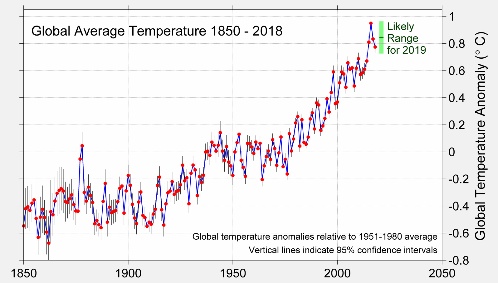

The Harmful Impacts of Global Warming


Do You Want This To Happen to Polar bears? If Not, then I'll explain why we should be more careful of our surroundings!
First, we need to learn about why Global Warming is an important issue in the first place
An important issue from Global Warming is the Temperature Change thats been happening for some time
What's the amount of temperature the world is increasing by?
Scientists around the world have created climate models which are computer simulations of the climate system. Through rigorous testing, scientists have concluded that as the greenhouse gas concentration increases, so will the average surface temperature. Scientists have calculated that as the world continues to use fossil fuels, the average surface temperatures could rise between 2°C and 6°C by the end of the 21st century. In today's world, places all over America are experiencing all time hot weather, like of Alaska in July 2018 where it was 90 °F. Many cites have had dangerous weather like heat waves where it was deadly to be outside for too long in places like Arizona. The article has also said that the average temperature of the summers and winter will increase by 4.5°f by 2050. Additionally, winters will lose about 20-30 days. Rain and snowstorms will be more intense and more frequent in some places, and in other places will be less common and lighter.
Another issue resulting from Global Warming is the increased amount of Natural Diasters
The correlation between Natural Diasters and Climate change
As global warming is increasing, there will be an increased global risk of droughts, an increase of intense storms, and more windy tropical storms. Most climate models all have models that show similar trends towards what weather events be become more or less common, and the increase of more hot or warm weather. According to the Intergovernmental Panel on Climate Change, more greenhouse gases in the atmosphere will boost temperatures of the land area of earth.
Since global average temperature is increasing, we can say that there will be less cold weather, and a greater chance of record hot weather. We can also make more statements like if there's an increase in average temperature and variance, there will be less change in cold weather, and there will be more hot weather and more record hot weather.
Moreover, as the global temperature rises, the number of intense storms will increase. We can say this because if more and more water is being evaporated into the atmosphere from more heat, and since water vapor is fuel for storms, then there will be probably an increase in intense storms.